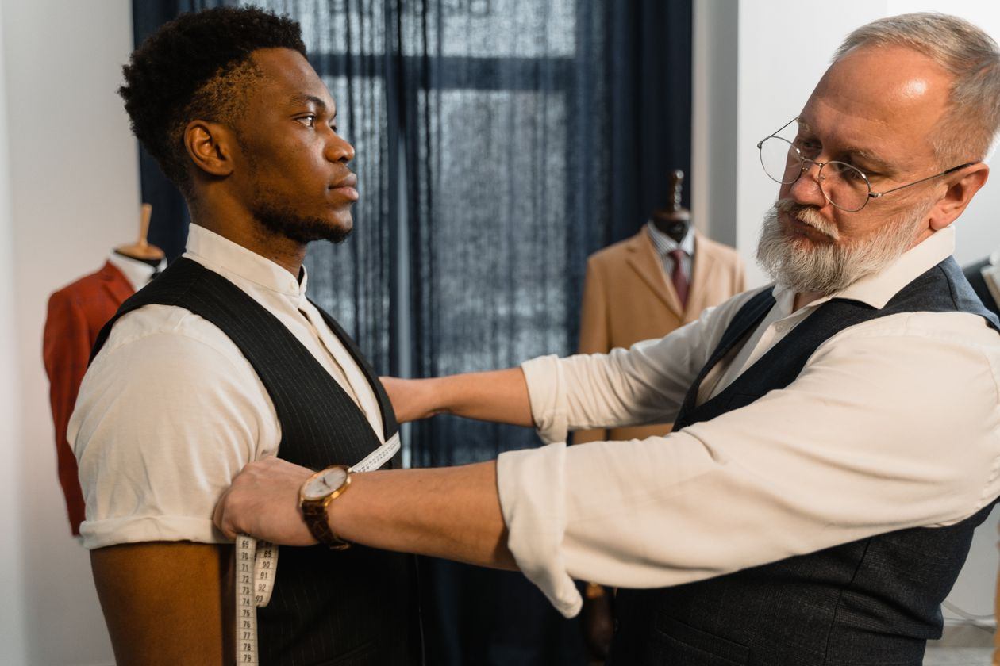

Shepherd Market · Mayfair, LondonBook open — delivering from February 2027
Three commissions, told properly
A garment is not a photograph. Each of these is set out the way
it happened — what was asked, what was decided at the bench and why, and what
the client got. Prices are the prices actually paid.
No. 118 · Case studyThe Barrister's Three-Piece
A suit for court: worn standing, argued in, and judged —
in every sense — by people who notice a pulling button. The client had
bought bespoke once before, elsewhere, and kept the coat but never wore
the waistcoat because it rode up when he sat.

Measuring for the three-piece: the waistcoat is measured over
a shirt, the coat over the waistcoat. Photograph: Tima Miroshnichenko, via Pexels.
The brief
Court dress that works as hard sitting as standing. The client stoops
half an inch from years at a desk, drops his right shoulder, and wears the
suit four days a week — so the cloth had to be a hard-wearing worsted, not
a luxury that shines at the seat by Christmas. Budget agreed at £3,900,
fixed, before cloth was chosen.
The decisions
The draft was cut with a forward stance and extra length over the back
to answer the stoop, and the right shoulder built up a quarter inch rather
than padded — padding shows; cutting does not. The waistcoat was cut with
a longer front and a shaped back so it stays down when he sits, the fault
in his old one. Cloth: a 280 g/m navy worsted from Huddersfield, chosen
over a finer Italian cloth at twice the price because it will out-wear it
two to one.
The outcome
Delivered in eleven weeks, on the agreed price. At the final fitting the
coat closed over the waistcoat with no horizontal crease — the test the
client set. He reports the waistcoat worn daily, which was the point of
the commission. First-year adjustments: one, the trousers shortened a
quarter inch as the cloth settled. Free, as promised.
Cloth
Navy worsted, 280 g/m
Construction
Full canvas, hand-padded lapels
Fittings / bench
Three · 64 hours
Price paid
£3,900 · 11 weeks
No. 116 · Case studyThe Wedding Suit, Built for Heat
A July wedding, a marquee, a hundred guests and a groom
who had watched his best man's suit collapse by the speeches. The enemy
was not fit — it was temperature and creasing.
The final fitting, a week before the wedding: the coat
fastened and the fronts checked in the mirror. Photograph:
Gustavo Fring, via Pexels.
The brief
Mid-grey, formal enough for a church morning and easy enough for a field
by evening. The groom runs hot and said so plainly. The date was fixed —
eleven weeks from first appointment to wedding — so the commission was
accepted only because the book had room; a fixed date is the one deadline
I will not gamble with.
The decisions
Wool and mohair at 240 g/m: mohair gives the cloth its sheen, its cool
hand and its refusal to hold a crease. The coat was built full-canvas but
half-lined at the back — the lining is where the heat sits — and the
trousers were made twice over, a spare pair against grass, wine and
dancing. At the baste fitting we raised the armhole slightly; a groom
hugs more people in one day than in a year.
The outcome
Delivered a week before the wedding, £3,475 all in. The groom's verdict
is the one quoted on the home page: the shoulder line was still there at
midnight. The spare trousers were needed by ten. He has since ordered a
second suit for work — the ordinary sequel to a wedding commission, and
the one I value most.
Cloth
Wool & mohair, 240 g/m
Construction
Full canvas, half-lined back
Fittings / bench
Three · 58 hours
Price paid
£3,475 · 10 weeks
No. 112 · Case studyThe Keeper's Tweed
Not a suit at all: a single shooting jacket for driven
days in Northumberland, ordered by a client whose coat and trousers I had
made the year before. A working garment, judged in the field, not the
mirror.
A checked jacket pinned at the forward fitting — fitted for
reach and movement, not just for the mirror. Photograph: Tima
Miroshnichenko, via Pexels.
The brief
Mount a gun forty times a day without the coat binding across the back.
Carry two dozen cartridges without the pockets sagging open. Survive wet
bracken, a wet dog and being sat on in a Land Rover. The client's pattern
was already on file, so two fittings were agreed instead of three — an
honest saving, passed on in the price.
The decisions
Estate tweed at 450 g/m — heavy, and deliberately so; light tweed is a
fashion cloth. An action back with pleats under the arm lets the shoulders
work, and the bellows pockets were cut with a drainage eyelet each, a
detail borrowed from gamekeepers' coats a century old. Buttons are horn,
sewn on with a shank long enough to fasten in gloves.
The outcome
Delivered October 2025, £2,300. It has done two seasons. Its one return
to the workshop was a torn pocket mouth — caught on a fence — repaired for
the cost of the cloth and an hour, £45. The client calls it the only coat
he owns that his keeper envies, which in that company is the review that
counts.
Cloth
Estate tweed, 450 g/m
Construction
Full canvas, action back
Fittings / bench
Two · 49 hours
Price paid
£2,300 · 9 weeks
Further entries — a conductor's
dinner jacket (No. 109), two overcoats, and a run of trousers for a client who
orders nothing else — are in the order book and can be discussed at a first
appointment. Clients are never photographed for this site; photographs are
licensed stock, captioned for what they show.
Your garment starts with a measure book, not a mood board.
The first appointment is forty-five minutes and costs nothing. If your
commission belongs in the order book, we will know by the end of it.